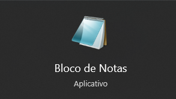
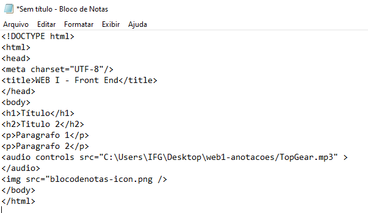
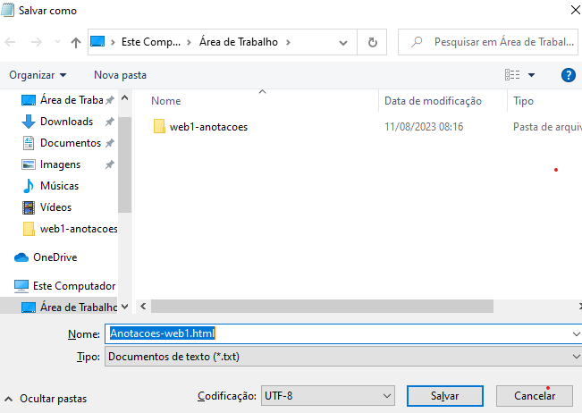
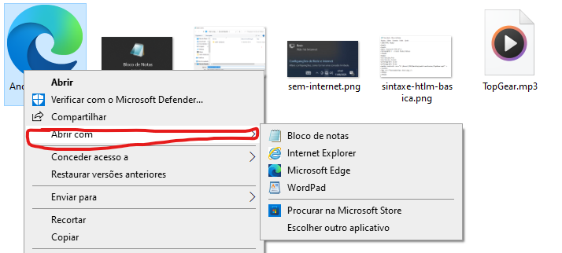

Primeiro conteúdo TAGS
Nessa matéria aprenderemos conceitos básicos de como a web funciona, HTML, CSS e demais aspectos relacionados a front-end
Escute essa musiquinha enquanto acompanha o tutorial pra ficar no hype
O Lab estava sem internet. Esse é um teste para saber como programar no bloco de notas e pra matar meu tédio. Farei um tutorial de como cheguei até aqui só para treinar.

De qualquer forma é importante para visualizar o progresso enquanto desenvolve para acompanhar bem a matéria
Pode ser qualquer editor de texto, o importante vai ser como você salva o arquivo.
Coloque o corpo do html dentro do arquivo desta forma
Essa é a parte mais importante, salve o arquivo como "arquivo.html" ou "arquivo.htm"
Clique no arquivo com o botão direito e selecione abrir com o seu navegador de preferência
